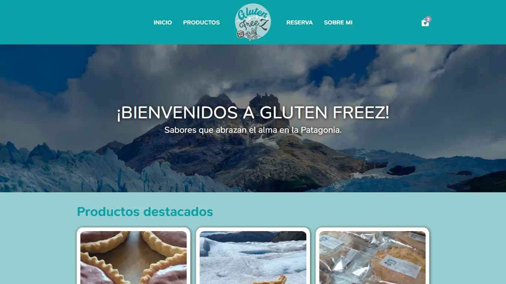

Sobre mi
Actualmente me estoy formando como desarrollador web Full Stack. Busco adquirir experiencia práctica y seguir creciendo en el mundo del desarrollo.
Tecnologías
Frontend
- HTML
- CSS
- Javascript
- React
Backend
- Node.js
- Express
- MySQL
- MongoDB
Proyectos
Gluten freez | Tienda online sin gluten
Desarrollo de tienda online de alimentos sin gluten, con catálogo dinámico de productos, integración con WhatsApp para gestión de pedidos y consultas, e integración de sistema de reservas mediante Cal.com..


Formación
Tecnicatura Superior en Programación
Teclab Instituto Técnico Superior